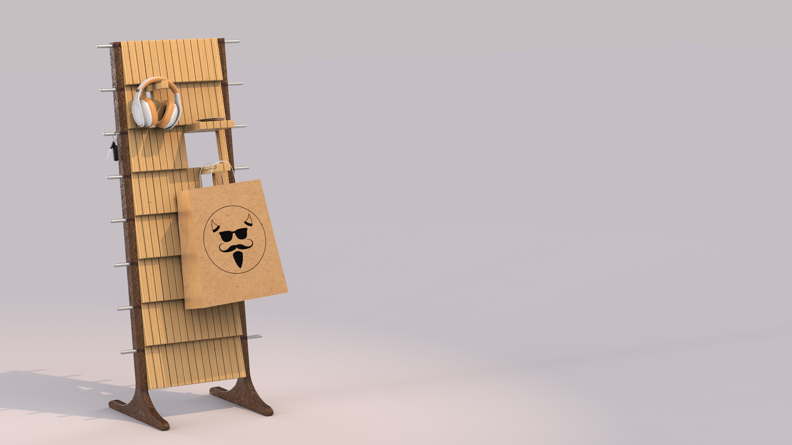
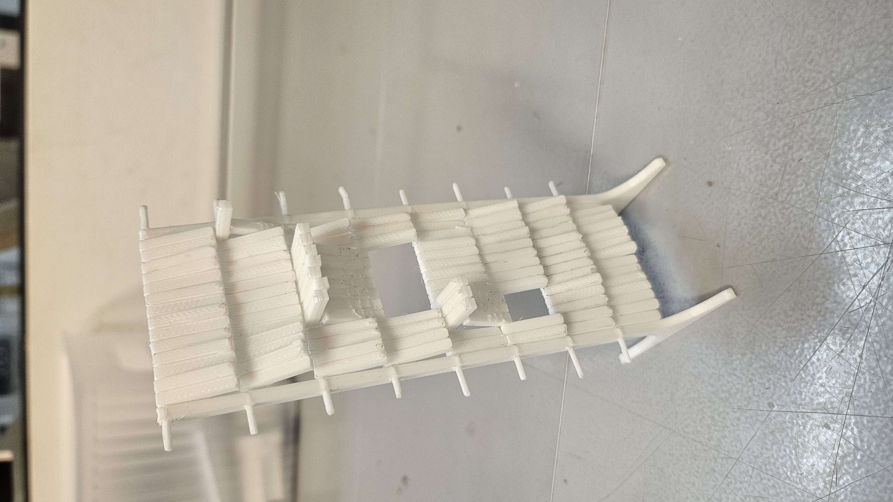
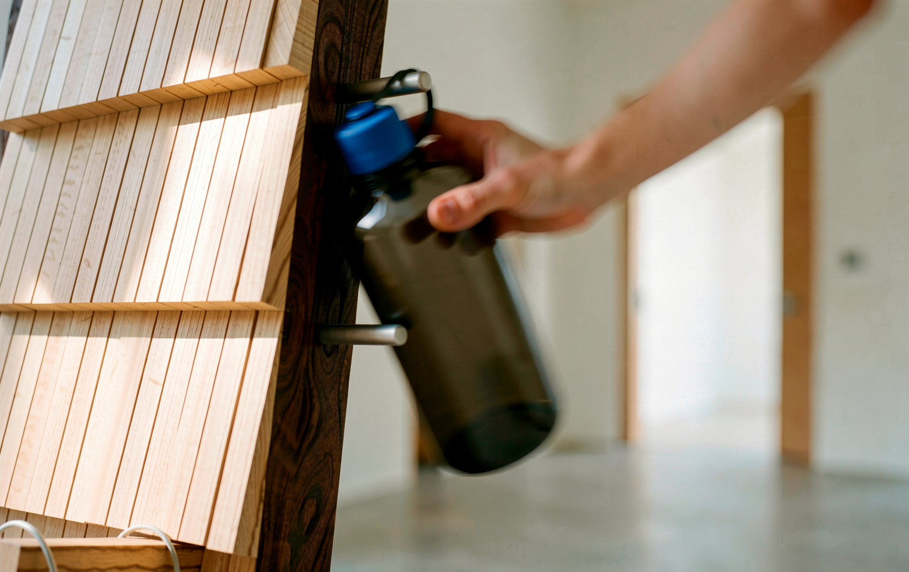
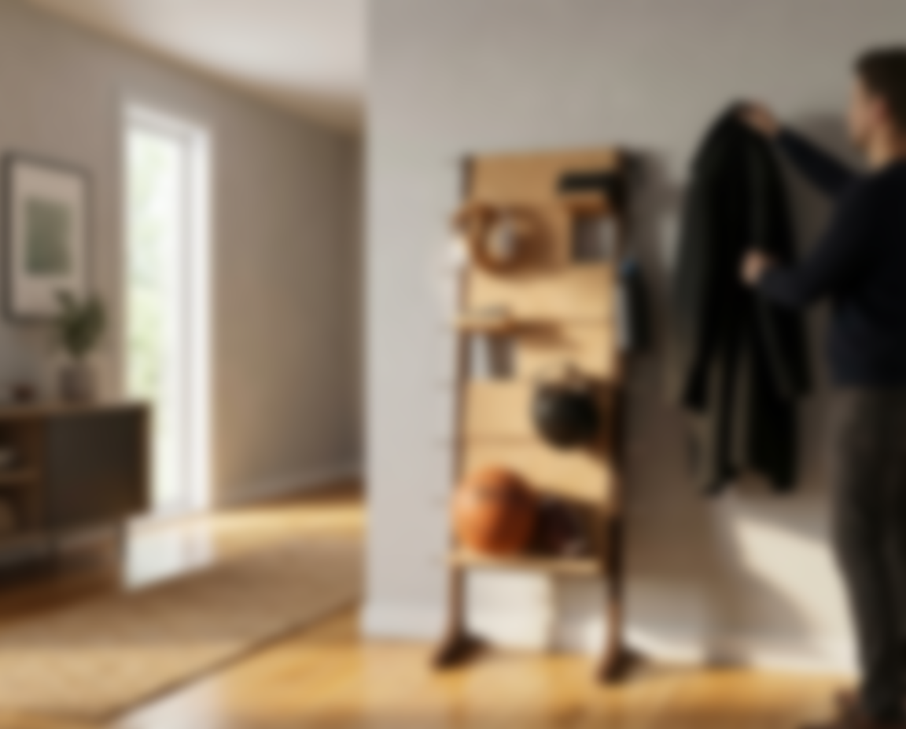

Coming home isn't a moment for organization. It's a moment of release.
The First 5 Seconds
We all have a spot by the door. A chair, a countertop, a table edge — where keys land, bags drop, and coats pile up. The moment you walk through the door after a long day, organization is the last thing on your mind. You decompress first. The pile comes later.
The research framing: The First 5 Seconds. Coming home is a moment of release, not a moment for organization. Items accumulate in transitional spaces — tables, counters, chairs — because nothing was designed for that exact behavior. Most entry organizers assume people want to be organized when they walk in. They don't. They want to put things down.

Coming home isn't a moment for organization — it's a moment of release.
Three Patterns
Three behavioral observations drove the brief. These aren't failure states — they're the actual sequence of arrival behavior. Design against them and you lose. Design with them and the form resolves itself.
Drop — keys, bags, and daily items are set down immediately, without intention
Give items an intentional landing point near the door
Decompress — after a long day, users prioritize relief over organization
Make the organizer feel residential, not utilitarian
Pile — items accumulate in transitional spaces because nothing was designed for that behavior
Provide enough surface area and attach points to absorb the pile
The Brief
The constraint that shaped everything: stop designing against human behavior. If people are going to drop things near the door anyway, give them a beautiful, intentional place to do it — one that feels like part of the home, not a storage product.
The brief became: stop fighting it.
Stop designing against human behavior. Design with it.
Form Exploration
The slatted geometry came early. Horizontal rods passing through vertical wood panels — every intersection a potential attach point. The question wasn't if this geometry worked, it was how many points and at what spacing.
Early explorations ranged across dense vs. open slot patterns, fixed vs. adjustable rod positions, wall-mount vs. freestanding lean. The freestanding lean direction won quickly — no hardware, no wall damage, deployable anywhere near a door.

Early CAD exploration — slot spacing and rod geometry

Profile development — lean angle and panel proportion

Physical scale model — lean geometry, slot spacing, and rod position test
Prototype Validation
An FDM scale prototype tested the lean geometry, rod UX, and shelf proportions. The prototype revealed the lean angle was too aggressive at the original 8° — at full scale it felt unstable and top-heavy. Revised to 5°, which resolved the stability without compromising the wall-adjacent silhouette.
Rod diameter was also increased from the initial spec after grip testing showed the smaller diameter slipped under heavy bags. The thicker rod locked position better and felt more intentional in hand.

FDM scale prototype — geometry validated before committing to final dimensions

Adjustable rod seated in the slatted panel — every slot a potential position
The Landing Zone
Warm wood panels read as furniture — the kind of thing that belongs in a home, not a storage aisle. The lean geometry keeps it wall-adjacent without requiring mounting hardware. The rods slide along the outer frame; shelf positions reconfigure without tools.
112 customization points across the full surface area. Not cosmetic variation — structural flexibility. Every slot is a real attachment point. The system adapts to the user's actual load, not the designer's assumption of what that load should look like.
112 Points of Customization
Every slot in the slatted surface is a potential hook, ledge, or rest. Lower positions handle bulky sports gear; upper positions handle small daily items. The system adapts to the user's actual load — a jacket hook next to a water bottle shelf next to a headphone rest.
Headphone rest — upper slatted position

Water bottle shelf — mid-frame rod

Jacket hang — lower hook position
The constraint wasn't form — it was behavior. Once I stopped trying to force organization and started designing for the actual moment of arrival, the form resolved quickly.

